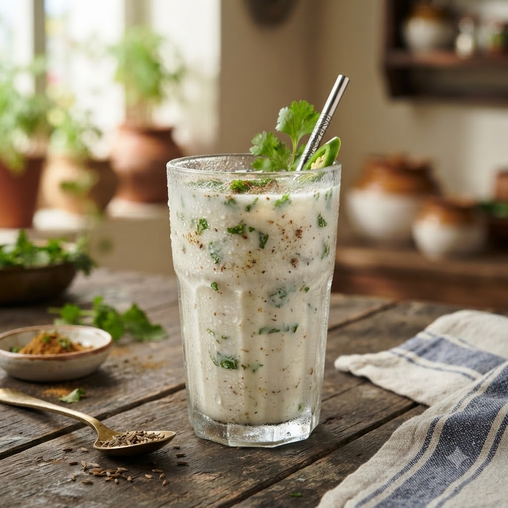

Homemade Buttermilk (Masala Chaas)

Homemade Buttermilk (Masala Chaas)
Chef Magic – Whisk/Blend — 4 min — Serves 2
Gluten-Free • Gut-Friendly • Probiotic • Vegetarian • No-Cook
Ingredients
- 1 cup fresh curd (yogurt)
- 2 cups chilled water
- 1/4 tsp roasted cumin powder (bhuna jeera powder)
- Salt to taste
- A few mint or coriander leaves (hara dhania)
- 1 green chilli (optional)
Method
1Add all ingredients to the jar.
2Select Whisk/Blend (Speed 8–10) and run until smooth and frothy.
3Pour into glasses over ice and serve immediately.